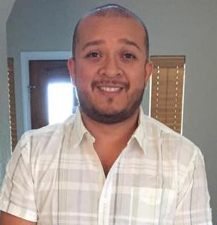

My name is Erick Renteria, I been working as a software quality analyst engineer for about 9 years.
I enjoy working with complex technology and environments that will challenge me and also help learn.
Working with people is something I enjoy, I also create environments where communication and collaboration
is part of every day. I enjoy creating productive processes that work and get a team to hit targets.
I have an easy going personality and I'm work and communicate with many types of personalities.
A little more about me
I'm a father of two little boys and I joy playing with them every time I get. I grew up in Chicago
and have been in Austin for about 4 years. I enjoy scuba diving and when ever I have the opportunity I get under the water
Why do I like technology?
I love technology and how it has the potential to help others
when applied correctly. I have worked on projects that have helped people improve
their lives. My work has a valuable impact on many people and several businesses.